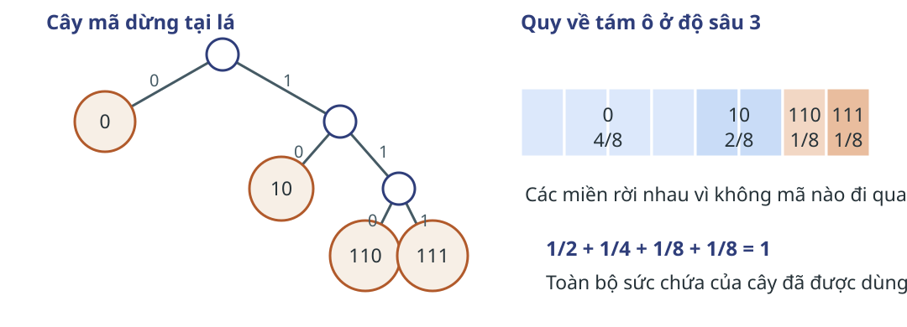
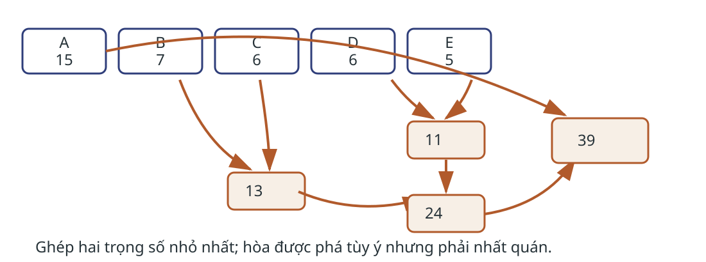
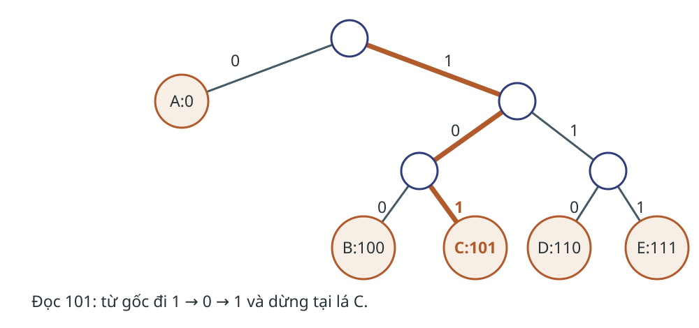
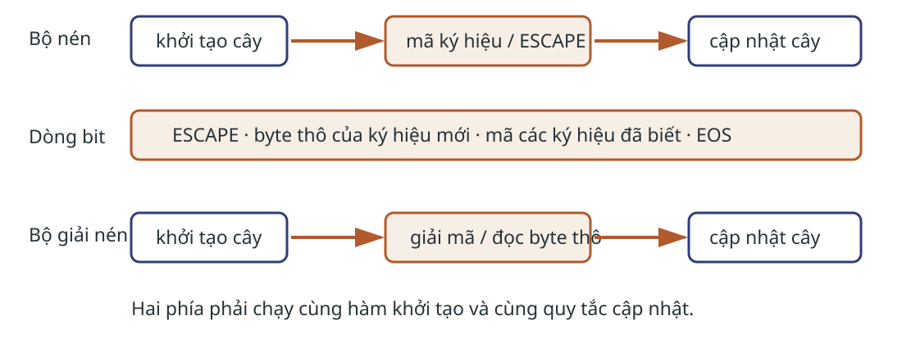
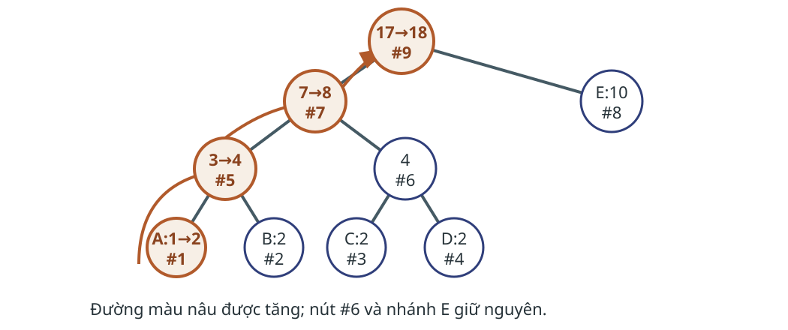
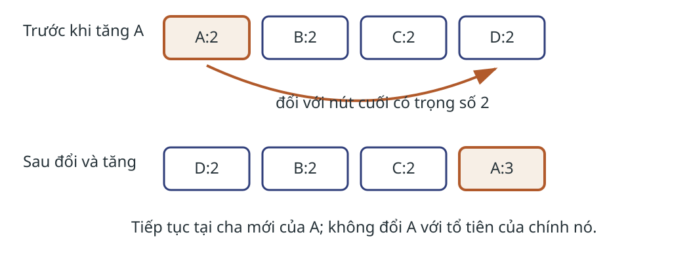
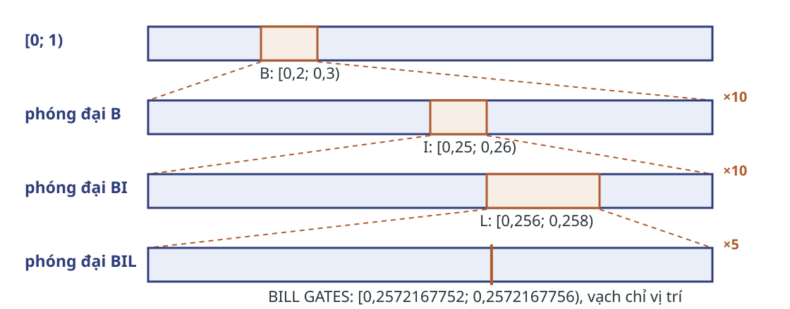
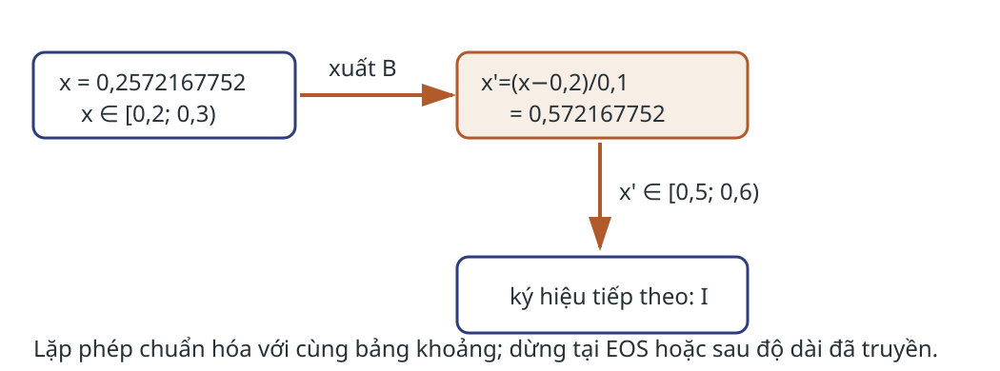
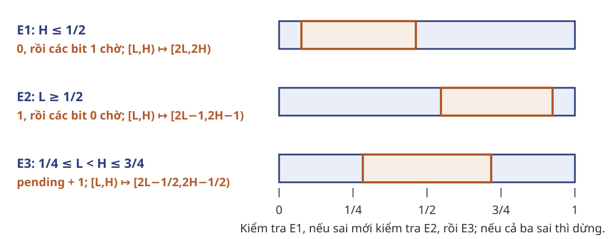

Mã ngắn cho ký hiệu xuất hiện nhiều Một kho văn bản lớn có phân phối ký hiệu lệch. Mã tám bit cho mọi ký hiệu bỏ phí cấu trúc này.
Đầu ra Dòng bit khôi phục đúng văn bản.
Giới hạn Đọc dữ liệu, truyền mô hình và giải mã tuần tự đều có chi phí.
Huffman tĩnh thường cần một lượt đếm trước hoặc một mô hình đã biết, rồi phải truyền đủ dữ liệu để tái dựng cây. Phần phân tích chi phí sẽ thu hồi cả hai khoản này. Nguồn: Nelson–Gailly Chương 3, PDF tr.31–37. Đặc tả mã không mất thông tin Đầu vào Bảng chữ cái $\Sigma$, thông điệp $x_1\ldots x_n$, tần suất $f_s$.
Đầu ra Từ mã nhị phân $c(s)$ và phép giải mã duy nhất.
$\operatorname{decode}(c(x_1)\cdots c(x_n))=x_1\cdots x_n$
Phân biệt đặc tả với cài đặt. Điều kiện trước là bộ nén và giải nén thống nhất cùng bảng mã. Mã tiền tố cho phép dừng tại lá Không từ mã nào là tiền tố của từ mã khác.
Hợp lệ: 0, 10, 110, 111
Đọc đến lá thì xuất một ký hiệu.
Không hợp lệ: 0, 01, 11
Bit 0 có thể là một mã hoặc đầu của 01.
Stanford CS106B và CMU `compression1-2` dùng cách trình bày tương tự. Kraft xác định miền độ dài khả thi 
$\sum_{s\in\Sigma}2^{-\ell_s}\le1$
Mọi bộ độ dài của mã tiền tố phải nằm trong miền này; Huffman tìm chi phí nhỏ nhất trong miền khả thi.
Một từ mã dài $\ell$ chiếm $2^{d-\ell}$ lá ở độ sâu chung $d$. Các phần bị chiếm rời nhau, nên tổng không vượt quá sức chứa của cây. Bất đẳng thức cho điều kiện khả thi; thuật toán Huffman sẽ chọn độ dài theo tần suất. Nguồn đối chiếu: CMU Assignment 1a, Problem 4. Năm lá của ví dụ A–E Ký hiệu A B C D E Tần suất 15 7 6 6 5
Tổng cộng 39 ký hiệu. Ban đầu, mỗi ký hiệu là một cây tự do.
Dữ liệu giữ nguyên Nelson–Gailly Ch.3, PDF tr.32–35. Không trộn với ví dụ chín ký hiệu của Stanford. Hai lượt ghép đầu Lượt 1 $E:5+D:6\rightarrow11$
Lượt 2 $C:6+B:7\rightarrow13$
Hòa giữa C và D được phá tùy ý; tỷ lệ nén không đổi nếu quy tắc nhất quán.
Sách chọn D và E trước, rồi B và C. C và D cùng trọng số 6 nên có thể đổi vị trí; từ mã cụ thể đổi nhưng tổng số bit không đổi. Nelson–Gailly tr.35. Ghép đến khi còn một gốc 
Sau hai lượt đầu có 11,13,15. Ghép 11+13=24, rồi 15+24=39. Mỗi lượt giảm số cây tự do một nên dừng sau k−1 lượt. Bảng mã đọc từ gốc đến lá Ký hiệu A B C D E Từ mã 0 100 101 110 111 Số bit đóng góp 15 21 18 18 15
$15+21+18+18+15=87\text{ bit}$
Bảng đúng theo Nelson–Gailly tr.36–37. Shannon–Fano của cùng ví dụ dùng 89 bit. Giải mã là một bước đi trên cây 
Bắt đầu lại từ gốc sau mỗi lá. Ví dụ 0101110 giải mã lần lượt A, C, D. Nếu hết bit giữa một nút trong, dòng bị cắt hoặc hỏng. Dựng cây bằng hàng đợi ưu tiên Q ← các lá (ký hiệu, tần suất)
while |Q| > 1:
u ← lấy nút nhẹ nhất
v ← lấy nút nhẹ nhất
w ← nút trong có trọng số u.w + v.w
gắn u, v làm hai con của w; đưa w vào Q
return nút còn lại
Điều kiện dừng: còn đúng một cây chứa mọi ký hiệu.
Đầu vào cần k ký hiệu có tần suất dương. Quy tắc hòa phải xác định nếu cần tái tạo đúng cùng cây. Stanford CS106B hỗ trợ cách trình bày hàng đợi; dữ liệu theo sách. Cây tạo phép giải mã duy nhất Mỗi ký hiệu nằm ở một lá. Không lá nào là tổ tiên của lá khác. Vì vậy không từ mã nào là tiền tố của từ mã khác. Đọc bit luôn chọn đúng một cạnh; gặp lá thì ranh giới ký hiệu đã xác định. Mệnh đề: mọi dòng được tạo bằng bảng mã của cây giải mã duy nhất. Chứng minh theo từng ký hiệu: đường từ gốc đến lá là duy nhất, rồi khởi động lại ở gốc. Phép đổi đưa hai lá nhẹ nhất về cùng cha $\operatorname{cost}(T)=\sum_s f_s\ell_s$
Gọi $x,y$ là hai ký hiệu nhẹ nhất; chọn hai lá anh em $a,b$ ở độ sâu lớn nhất. Đổi $x$ với $a$, rồi $y$ với $b$. Đưa trọng số nhỏ xuống sâu hơn không làm tăng tổng $\sum_s f_s\ell_s$. Co $x,y$ thành một lá trọng số $f_x+f_y$. Nếu cây co chưa tối ưu, thay bằng cây tốt hơn sẽ cải thiện cây ban đầu. Lặp lập luận trên bài toán nhỏ hơn: quy nạp cho phép ghép hai nút nhẹ nhất ở mỗi lượt. Mệnh đề cần chứng minh là tồn tại một mã tiền tố tối ưu trong đó hai ký hiệu nhẹ nhất là hai lá anh em sâu nhất. Với một phép đổi giữa trọng số nhẹ $f_x$ ở độ sâu $\ell_x$ và trọng số $f_a\ge f_x$ ở độ sâu $\ell_a\ge\ell_x$, độ chênh là $(f_x-f_a)(\ell_a-\ell_x)\le0$; phép đổi thứ hai tương tự. Sau khi co cặp, phản chứng cho thấy bài toán con phải tối ưu. Đây là phần triển khai lập luận tối ưu, không phải lời khẳng định rằng nguồn có sẵn chứng minh đầy đủ. Đối chiếu Nelson–Gailly, PDF tr.37, và Stanford EE398A, *Entropy and Lossless Coding*, trang chiếu 18. Chi phí và phần đầu mục Dựng cây $O(k\log k)$ với hàng đợi ưu tiên.
Mã hóa Tuyến tính theo số bit đầu ra.
Đầu mục Phải truyền cây, độ dài mã hoặc bảng tần suất.
Trường hợp một ký hiệu cần quy ước từ mã hoặc truyền riêng độ dài thông điệp. Hòa không đổi chi phí nhưng đổi bit cụ thể.
k là số ký hiệu phân biệt. Nelson–Gailly tr.67 nêu chi phí truyền bảng xác suất là nhược điểm của mã tĩnh. Không gộp chi phí đầu mục vào 87 bit của ví dụ vì sách đang so riêng phần thân mã. Kiểm tra cây Huffman Câu hỏi: Sau khi có các trọng số tự do 11, 13 và 15, ghép cặp nào? Nếu đổi C và D khi hòa, đại lượng nào giữ nguyên?
Đáp án: ghép 11 và 13 thành 24. Đổi C và D có thể đổi từ mã của chúng nhưng giữ độ dài bằng nhau và tổng 87 bit.
Không có bảng tần suất trước khi dòng đến Dòng nhật ký chỉ đi qua một lần. Một mô hình tĩnh cần lượt đếm trước hoặc phải gửi bảng tần suất trong đầu mục.
Huffman thích nghi bắt đầu từ cây quy ước và cập nhật cùng một lần ở cả hai phía.
Tình huống này kế thừa nhược điểm truyền bảng của Huffman tĩnh. Nelson–Gailly Chương 4, PDF tr.67–68, đặt bài toán cập nhật cây khi chưa biết trước thống kê. Thuật toán cơ bản cộng dồn quan sát; nó không có bảo đảm tự bám theo một phân phối thay đổi đột ngột. Hai phía phải cập nhật cùng nhịp 
Bất biến đồng bộ: trước khi xử lý ký hiệu thứ t, hai phía có cùng cây. Sau khi xử lý, cả hai gọi cùng quy tắc update. Nelson–Gailly tr.68, 76–81. Ký hiệu mới đi qua bốn bước Ký hiệu mới: E
1. phát mã(ESCAPE)
2. phát 01000101
3. chẻ nút nhẹ nhất; thêm lá E:0
4. UpdateModel(E): E và tổ tiên +1
Kết thúc dòng Phát EOS. Bộ giải nén dừng khi đọc được lá này.
Cây ban đầu chứa ESCAPE và EOS.
Vết đúng theo Nelson–Gailly Ch.4: ký hiệu byte chưa có được báo bằng ESCAPE, theo sau là đúng tám bit thô. Thủ tục thêm nút chẻ nút nhẹ nhất hiện có thành một nút trong với lá cũ và lá mới trọng số 0. Sau đó cả hai phía gọi cùng UpdateModel cho E; lá E tăng lên 1 và các tổ tiên tăng một. Không gọi ESCAPE bằng tên nút của biến thể khác. Tính chất anh em đặc trưng cây Huffman Có thể liệt kê mọi nút theo trọng số không giảm sao cho hai nút cùng cha đứng kề nhau.
Mỗi nút trong có trọng số bằng tổng hai con.
Sau mỗi lần tăng, thứ tự trọng số và cặp anh em phải được khôi phục.
Nelson–Gailly tr.68–69. Không dùng Hình 4.1 ở PDF tr.69 vì hình và lời mô tả trọng số không khớp. Tăng đúng một đường lên gốc 
Hình vẽ lại đầy đủ Hình 4.2 của Nelson–Gailly, PDF tr.70. A tăng từ 1 lên 2; nút trong số 5 tăng từ 3 lên 4; nút số 7 tăng từ 7 lên 8; gốc số 9 tăng từ 17 lên 18. Nút số 6 vẫn bằng 4 và E vẫn bằng 10 vì chúng không nằm trên đường cập nhật. Lần tăng kế tiếp phá thứ tự khối Trạng thái cuối vừa có A, B, C, D cùng trọng số 2. Nếu chỉ tăng A thành 3, A vượt qua ba nút trọng số 2 đứng sau nó trong danh sách.
$A:2, B:2, C:2, D:2\quad\not\to\quad A:3,B:2,C:2,D:2$
Đây là lần quan sát A tiếp theo sau trạng thái cuối của Hình 4.2. Vi phạm nằm ở thứ tự không giảm dùng cho tính chất anh em; tổng trọng số sẽ được cập nhật tiếp sau khi sửa vị trí của A. Đổi A với D rồi đi từ cha mới 
Hình vẽ lại đúng thời điểm của Hình 4.3, Nelson–Gailly PDF tr.71: chỉ A đã tăng từ 2 lên 3 và đổi với D. Vì vậy nút số 6 vẫn ghi 4, nút số 7 vẫn ghi 8 và gốc vẫn ghi 18. Bước tiếp theo tăng cha mới của A là nút số 6; sau đó đường cập nhật tiếp tục lên nút số 7 và gốc. Không đổi một nút với tổ tiên của chính nó. Kiểm tra ngưỡng trước mỗi cập nhật if gốc.w = MAX_WEIGHT:
mọi lá.w ← (lá.w + 1) // 2
dựng lại cây từ các lá
v ← lá của ký hiệu
loop:
w_cũ ← v.w; v.w ← w_cũ + 1
if v = gốc: break
if thứ tự trọng số bị vi phạm:
u ← nút cuối của khối w_cũ, không là tổ tiên của v
đổi hai cây con tại u, v
v ← cha hiện tại của v
Nelson–Gailly kiểm tra ngưỡng để tránh tràn bộ đếm và mã quá dài. Khi đạt ngưỡng, chương trình thay trọng số mỗi lá bằng $(w+1)//2$ rồi dựng lại cây; phép làm tròn giữ ký hiệu đã thấy ở trọng số dương. Trong cập nhật thường, tăng nút, dừng ngay tại gốc, tìm nút cuối hợp lệ của khối cũ nếu thứ tự bị vi phạm, đổi hai cây con rồi lấy cha sau phép đổi. Loại tổ tiên khỏi ứng viên để phép đổi không tạo chu trình. Ba bất biến giữ hai phía đồng bộ Đồng bộ Trước mỗi ký hiệu, hai phía có cùng cây.
Cấu trúc Sau đổi và tăng, cây giữ tính chất anh em.
Nhánh mới Lá mới vào với trọng số 0; cập nhật ngay từ lá đó.
Vì hai phía chạy cùng bốn bước, chúng chọn cùng đường mã ở ký hiệu kế tiếp.
Cơ sở: cùng cây chứa ESCAPE và EOS. Với ký hiệu đã biết, hai phía dùng cùng cây rồi chạy cùng quy tắc cập nhật. Với ký hiệu mới, cả hai đọc cùng tám bit, chẻ cùng nút nhẹ nhất, đặt lá mới trọng số 0 rồi cập nhật từ lá mới. Khi gốc cùng đạt ngưỡng, hai phía dùng cùng phép làm tròn $(w+1)//2$, cùng quy tắc phá hòa và cùng thủ tục tái dựng, nên nhận lại cùng cây. Tổng trọng số ở mỗi nút trong vẫn bằng tổng hai con; thứ tự khối được khôi phục sau mỗi phép tăng, đổi hoặc dựng lại. Đây là bước quy nạp theo số ký hiệu đã xử lý. Chi phí cập nhật và mục tiêu dựng lại Cập nhật thường đi theo đường từ lá đến gốc; mỗi mức có thể cần tìm cuối khối và đổi con trỏ. Dựng lại toàn cây là thao tác hiếm nhưng đắt hơn một đường cập nhật. Nguồn dùng giảm trọng số rồi dựng lại để tránh tràn và giới hạn độ dài mã. Giảm trọng số cũng chiết giảm lịch sử cũ, nhưng thuật toán không bảo đảm bám theo mọi thay đổi phân phối. Cần tách hai ý. Tránh tràn là lý do thuật toán gọi dựng lại. Việc số liệu cũ bị giảm ảnh hưởng là một tác dụng kèm theo được sách quan sát, không phải bảo đảm theo dõi phân phối trôi. Chi phí cụ thể còn phụ thuộc cách lưu danh sách nút, chỉ mục khối và con trỏ cha. Kiểm tra phép đổi nút Câu hỏi: Khi A tăng từ 2 lên 3 trong dãy A,B,C,D cùng trọng số 2, A đổi với nút nào? Sau đó cập nhật tiếp từ đâu?
Đáp án theo Hình 4.3: đổi A với D, nút cuối của khối trọng số 2; sau đó đi đến cha mới của A và tiếp tục.
Một trăm nghìn số 0 chỉ còn ba byte Nelson–Gailly tạo tệp gồm 100.000 số 0 với mô hình hai ký hiệu:
$p(0)=\frac{16382}{16383},\qquad p(\mathrm{EOS})=\frac1{16383}$
Huffman Tối thiểu 12.501 byte.
Mã số học Tệp nén dài 3 byte.
Dữ kiện trực tiếp ở Nelson–Gailly Chương 5, phần “Where’s the Beef?”, PDF khoảng tr.104. Mã tiền tố cần một bit cho mỗi số 0 và thêm mã EOS: 100.001 bit chiếm 12.501 byte. Ví dụ này cho thấy giới hạn một bit mỗi ký hiệu khi bảng chữ cái có hơn một ký hiệu. Mã số học gán một khoảng cho cả thông điệp Huffman Mỗi ký hiệu nhận một từ mã có độ dài nguyên bit.
Mã số học Mỗi ký hiệu thu hẹp khoảng; một số bất kỳ trong khoảng cuối đại diện cho cả chuỗi.
Vấn đề: độ dài −log2 p không thường là số nguyên. Mã số học tránh làm tròn riêng từng ký hiệu. Nelson–Gailly tr.96–98. Phân hoạch khoảng bằng xác suất tích lũy Với mỗi ký hiệu $s$, chọn $0\le C_s<D_s\le1$ và $D_s-C_s=p_s$.
$[0,1)=\bigsqcup_{s\in\Sigma}[C_s,D_s)$
Khoảng nửa mở làm mỗi điểm biên thuộc đúng một ký hiệu.
Bộ nén và giải nén phải dùng cùng thứ tự ký hiệu và cùng bảng tích lũy. Nelson–Gailly tr.97. Mô hình của “BILL GATES” Ký hiệu Khoảng Ký hiệu Khoảng Ký hiệu Khoảng khoảng trắng [0,0;0,1) A [0,1;0,2) B [0,2;0,3) E [0,3;0,4) G [0,4;0,5) I [0,5;0,6) L [0,6;0,8) S [0,8;0,9) T [0,9;1,0)
Tám ký hiệu có xác suất 0,1; L có xác suất 0,2. Dùng dấu phẩy thập phân trên mặt trang, nhưng giữ quy ước khoảng nửa mở. Nelson–Gailly tr.97. Ba ký hiệu đầu thu hẹp khoảng 
Sau B là [0.2,0.3), sau I là [0.25,0.26), sau L là [0.256,0.258). Mỗi hàng phóng đại khoảng của hàng trước; bề rộng phần tô vẫn theo xác suất ký hiệu ở mức đó. Khoảng cuối [0.2572167752,0.2572167756) hẹp hơn độ phân giải của hình nên chỉ đánh dấu vị trí. Nelson–Gailly tr.98. Mỗi ký hiệu biến đổi cùng một khoảng Với khoảng hiện tại $[L,H)$ và ký hiệu $s$:
$L'=L+(H-L)C_s$
$H'=L+(H-L)D_s$
Điều kiện trước: $L<H$ và $C_s<D_s$.
Cần lưu L cũ khi tính H và L trong cài đặt. Ví dụ B: L'=0+1·0.2, H'=0+1·0.3. Khoảng lồng nhau giữ đúng tiền tố Bất biến: sau $t$ ký hiệu, $[L_t,H_t)$ gồm chính các số đại diện cho thông điệp có tiền tố đã mã hóa.
Cơ sở: mọi thông điệp nằm trong $[0,1)$. Bước quy nạp: ánh xạ đoạn $[C_s,D_s)$ vào khoảng hiện tại. Các đoạn con rời nhau, nên một số trong khoảng cuối xác định duy nhất chuỗi khi biết cách dừng. Mệnh đề đúng trong mô hình số học chính xác. Cài đặt hữu hạn phải duy trì bất biến tương ứng qua chuẩn hóa. Giải mã bằng chuẩn hóa ngược 
$x'=(x-C_s)/(D_s-C_s)$
Với $x=0.2572167752$, điểm này thuộc khoảng của B là $[0.2,0.3)$; chuẩn hóa cho $x'=0.572167752$, thuộc khoảng của I là $[0.5,0.6)$. Lặp phép chọn và chuẩn hóa để nhận BILL GATES. Nguồn: Nelson–Gailly, PDF tr.99. Cách dừng là một phần của định dạng Ký hiệu EOS Thêm một khoảng cho kết thúc; giải mã đến khi gặp EOS.
Độ dài truyền kèm Giải mã đúng số ký hiệu đã công bố.
Nếu thiếu cả hai, cùng một tiền tố bit có thể cho nhiều cách dừng.
Kết thúc: phát một tiền tố chọn điểm trong khoảng cuối; đệm theo định dạng chung.
Nelson–Gailly, PDF tr.99, dùng ký hiệu kết thúc dòng. Bài tập CMU cho sẵn độ dài bốn ký hiệu. Sau khi đã mã hóa EOS hoặc đủ số ký hiệu, bộ mã phát một tiền tố chọn được một điểm trong $[L,H)$, xử lý các bit đang chờ bằng bit bù và đệm theo định dạng đã thống nhất. Bộ giải nén phải biết cùng quy tắc kết thúc, bit bù và đệm. Cài đặt dùng thanh ghi hữu hạn Giữ $L,H$ trong thanh ghi số nguyên. Sau mỗi ký hiệu, phát tiền tố bit đã xác định. Dịch và mở rộng khoảng để tiếp tục mã hóa. Bộ giải nén thực hiện cùng các phép dịch. Nelson–Gailly, PDF tr.100–103, giải thích phát chữ số chung và xử lý underflow bằng thanh ghi hữu hạn. Stanford EE398A, *Arithmetic Coding*, trang chiếu 10–12 và 16, minh họa cài đặt hữu hạn và phép dịch. Hai nguồn hỗ trợ cơ chế. Chuẩn hóa theo thứ tự loại trừ pending ← 0
lặp sau mỗi lần thu hẹp:
if E1 (H ≤ 1/2):
phát 0 rồi pending bit 1
[L,H) ← [2L,2H)
pending ← 0
else if E2 (L ≥ 1/2):
phát 1 rồi pending bit 0
[L,H) ← [2L−1,2H−1)
pending ← 0
else if E3 (L ≥ 1/4, H ≤ 3/4):
pending++; [L,H) ← [2L−1/2,2H−1/2)
else: dừng chuẩn hóa

Khởi tạo một lần; pending tồn tại xuyên các ký hiệu. Bộ giải nén dùng cùng quy tắc.
Khởi tạo `pending` đúng một lần trước toàn bộ thông điệp; giá trị này được giữ khi chuyển từ ký hiệu hiện tại sang ký hiệu kế tiếp. Sau mỗi lần thu hẹp khoảng, kiểm tra `if`, `else if`, `else if`, `else`: E1 phát 0 rồi các bit 1 đang chờ; E2 phát 1 rồi các bit 0 đang chờ; E3 tăng bộ đếm mà chưa phát bit. Khi EOS hoặc độ dài đã biết kết thúc thông điệp, bước hoàn tất chọn một tiền tố nằm trong khoảng cuối, giải quyết các bit đang chờ bằng bit bù và đệm theo định dạng chung. Bộ giải nén phản chiếu các phép dịch và dùng cùng quy tắc hoàn tất. Nelson–Gailly, PDF tr.100–103, là nguồn cho tiền tố chung và underflow. Stanford EE398A, *Arithmetic Coding*, trang chiếu 10–12 và 16, là nguồn đối chiếu cho số học hữu hạn và phép dịch; deck không quy tên nhãn E1/E2/E3 cho Stanford. Độ rộng khoảng quyết định số bit Một chuỗi cụ thể $I(x_1\ldots x_n)=-\log_2 P(x_1\ldots x_n)$
Khoảng cuối có độ rộng $P(x_1\ldots x_n)$.
Trung bình của nguồn $H(P)=\sum_s p(s)(-\log_2 p(s))$
Entropy là giá trị trung bình, không phải độ dài của mọi chuỗi.
Chỉ với nguồn không nhớ, $I(x_1\ldots x_n)=\sum_i -\log_2 p(x_i)$.
Số bit cần để chỉ ra một điểm trong khoảng hẹp tỷ lệ với âm logarit độ rộng. Với mô hình tổng quát, dùng xác suất của cả chuỗi. Chỉ khi mô hình không nhớ, hay các ký hiệu độc lập theo cùng phân phối, xác suất chuỗi mới là tích các xác suất ký hiệu và tự thông tin mới tách thành tổng. Nelson–Gailly Chương 2 là nguồn cho tự thông tin và entropy. Bản in ở PDF tr.99 ghi nhầm khoảng của A. Chi phí nằm ở cả mô hình và bộ mã Cặp lựa chọn Bộ nhớ Công việc chính Điều kiện giao thức Tĩnh + Huffman $O(k)$ cho cây/bảng đi một đường mã truyền hoặc tái dựng cây Cập nhật + Huffman $O(k)$ cho cây và tra cứu lá đi đường cao $h$; có thể đổi nút cùng khởi tạo, cập nhật và dựng lại Tĩnh + số học $O(k)$ cho bảng tích lũy tìm khoảng và chuẩn hóa cùng số học hữu hạn và cách dừng
Ở đây $k$ là số ký hiệu trong mô hình và $h$ là số mức trên đường đang xử lý. Bảng chỉ nêu cấu trúc được lưu và các thao tác nguồn mô tả; thời gian tìm cuối khối, tìm khoảng hoặc dựng lại phụ thuộc cách cài đặt. Không suy ra một cặp luôn tốt hơn từ bảng này. Kiểm tra khoảng và điều kiện dừng Câu hỏi: Với bảng “BILL GATES”, khoảng sau B rồi I là gì? Bộ giải nén cần thêm thông tin nào để biết đã hết thông điệp?
Đáp án: [0.2,0.3), rồi [0.25,0.26). Cần EOS hoặc độ dài thông điệp.
Bài tập củng cố Ba bài giữ nguyên dữ kiện từ Nelson–Gailly và CMU. Nộp vết tính, trạng thái trung gian và kết luận theo từng yêu cầu.
Hai bài đầu chuyển các ví dụ chạy trong sách thành yêu cầu luyện tập. Bài cuối là bài tập chính thức của CMU. Dựng mã Huffman cho A–E Ký hiệu A B C D E Tần suất 15 7 6 6 5
Ghi bốn lượt ghép. Vẽ cây, chọn nhánh 0/1 và lập bảng mã. Mã hóa đầy đủ 39 ký hiệu theo tần suất và tính tổng số bit. Nêu ảnh hưởng của cách phá hòa C–D. Dữ kiện và tiến trình lấy từ ví dụ Nelson–Gailly Chương 3, PDF tr.35–37; sách không đặt đây là bài tập cuối chương. Sản phẩm gồm chuỗi bốn lượt ghép, cây có nhãn nhánh, bảng mã và phép tính đủ năm hạng. Theo lựa chọn của sách: $5+6=11$, $6+7=13$, $11+13=24$, $15+24=39$; A=0, B=100, C=101, D=110, E=111; tổng là 87 bit. Đổi C và D làm đổi mã cụ thể nhưng không đổi độ dài và tổng bit. Hướng dẫn chấm: 4 điểm lượt ghép, 4 điểm cây và bảng mã, 1 điểm tổng bit, 1 điểm phá hòa. Cập nhật A và khôi phục tính chất anh em Trạng thái đầu: lấy giá trị sau mũi tên trong hình: A=B=C=D=2; #5=#6=4; #7=8; #9=18.
Thực hiện một lần tăng A từ 2 lên 3. Chỉ ra vi phạm và nút đổi chỗ với A. Ghi cha mà thuật toán xử lý tiếp. Nêu hai bất biến cần giữ ở hai phía. Dữ kiện và tiến trình lấy từ Nelson–Gailly Chương 4, Hình 4.2–4.3, PDF tr.70–71; sách không đặt đây là bài tập cuối chương. Ảnh là một sơ đồ chuyển tiếp có cả giá trị trước và sau mũi tên, không phải ảnh chụp một trạng thái tĩnh. Trạng thái đầu của bài lấy các giá trị sau mũi tên: A, B, C, D đều bằng 2; nút số 5 và 6 bằng 4; nút số 7 bằng 8; gốc số 9 bằng 18. Từ đó chỉ thực hiện một lần tăng A lên 3. A vượt khối trọng số 2, nên đổi với D; sau đó cập nhật tiếp từ cha mới của A là nút số 6. Hai bất biến là hai phía có cùng cây và cây giữ tính chất anh em sau mỗi cập nhật. Hướng dẫn chấm: 2 điểm vi phạm, 3 điểm phép đổi, 2 điểm cha tiếp theo, 3 điểm bất biến. Giải mã một dòng bit số học Mô hình: $p(a)=0{,}1$, $p(b)=0{,}2$, $p(c)=0{,}7$ với các khoảng $[0;0{,}1)$, $[0{,}1;0{,}3)$, $[0{,}3;1)$.
Dòng bit biểu diễn số $0{,}01001110110_2$ . Giải mã đúng bốn ký hiệu.
Đổi dòng bit thành một số trong $[0,1)$ và ghi bốn khoảng toàn cục được chọn. Giải thích độ dài 11 bit bằng tự thông tin của chuỗi và quy tắc kết thúc hoặc đệm. Nguồn trực tiếp: CMU 15-499 Assignment 1a, Problem 3, tr.1; đối chiếu đáp án tr.2–3. Giá trị nhị phân là $0.3076171875$ và chuỗi giải mã là caba. Bốn khoảng toàn cục lần lượt là c: $[0.3,1)$; a: $[0.3,0.37)$; b: $[0.307,0.321)$; a: $[0.307,0.3084)$. Xác suất chuỗi bằng $0.0014$, nên tự thông tin xấp xỉ 9,48 bit. Biểu diễn 11 bit trong đề là một biểu diễn nguồn cung cấp, không nhất thiết ngắn nhất; định dạng kết thúc và đệm quyết định chuỗi bit hoàn chỉnh. Hướng dẫn chấm: 2 điểm đổi số, 4 điểm bốn khoảng và chuỗi, 4 điểm giải thích tự thông tin cùng định dạng.